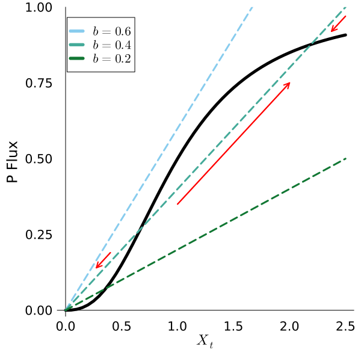

Code
using Pkg
Pkg.activate(dirname(@__DIR__))
Pkg.instantiate()using Pkg
Pkg.activate(dirname(@__DIR__))
Pkg.instantiate()using Plots
using LaTeXStringsSystems can exhibit complex, nonlinear dynamics, including (but not limited to):
In this notebook, we’ll look at a simple model which has very complex dynamics: the shallow lake problem introduced by Carpenter et al. (1999).
Eutrophication is a common environmental problem in which plants and algae feed on excess nutrients and become overabundant. The large mass of plants and algae have several noxious effects on the ecosystem, including:
In lakes, eutrophication is often caused by excess input of nutrients (particularly phosphorous, P), which can come from point sources (such as industrial processes) and/or non-point sources (such as agricultural runoff). As the P releases are related to economic activity, we can view this (simplified) lake management problem from the perspective of a tradeoff between economic benefits and the health of the lake: while there are benefits to the activities which lead to P releases, there are recreational, aesthetic, and ecological benefits to maintaining the lake in a non-eutrophic (or oligotrophic) state.
Suppose we have a town which emits phosphorous into a lake as a by-product of economic activity. The level of P in the lake at a given time \(t\) is given by \(X_t\) (for the purposes of this problem, we will just treat all values as dimensionless).
The level of controllable P release in year \(t\) is \(a_t\). The lake also receives random levels of phosphorous from non-point source runoff, which we denote by \(y_t\). We model these random runoffs using a lognormal distribution \(LogNormal(\mu, \sigma^2)\), which ensures that the runoffs cannot be negative.
There is also some nutrient cycling in the lake which naturally reduces phosphorous concentrations. This cycling is the result of accumulation in the sediment and turnover (water motion disturbing the sediment and carrying the nutrients upwards) and consumers, such as mussels. This cycling is dependent on the state \(X_t\), \(\frac{X_t^q}{1 + X_t^q}\). The lake also loses some of its P each time period of its due to outflows and consumption, which we assume is linearly proportional to the state, \(bX_t\).

As a result, the lake dynamics are given by:
\[X_{t+1} = X_t + a_t + y_t + \frac{X_t^q}{1 + X_t^q} - bX_t, \quad y_t \sim LogNormal(\mu, \sigma^2),\]
where parameter interpretation is given in the table below.
| Parameter | Definition | Units |
|---|---|---|
| \(X_t\) | P concentration in lake | dimensionless |
| \(a_t\) | point source P input | dimensionless |
| \(y_t\) | non-point source P input | dimensionless |
| \(q\) | P recycling rate | dimensionless |
| \(b\) | rate at which P is lost | dimensionless |
This analysis is adapted from Quinn et al. (2017).
First, let’s look at how the balance of P recycling and outflows affects the accumulation of P in the lake absent additional inputs (\(a=y=0\)).
# define functions for lake recycling and outflows
lake_P_cycling(x, q) = x.^q ./ (1 .+ x.^q);
lake_P_out(x, b) = b .* x;
# define range of lake states X
x = 0:0.05:2.5;# plot recycling and outflows for selected values of b and q
p1 = plot(x, lake_P_cycling(x, 2.5), color=:black, linewidth=5,legend=:topleft, label=:false, ylabel="P Flux", xlabel=L"$X_t$", tickfontsize=14, guidefontsize=16, legendfontsize=14, palette=:tol_muted, framestyle=:zerolines, grid=:false)
plot!(x, lake_P_out(x, 0.6), linewidth=3, linestyle=:dash, label=L"$b=0.6$")
plot!(x, lake_P_out(x, 0.4), linewidth=3, linestyle=:dash, label=L"$b=0.4$")
plot!(x, lake_P_out(x, 0.2), linewidth=3, linestyle=:dash, label=L"$b=0.2$")
quiver!([1], [0.35], quiver=([1], [0.4]), color=:red, linewidth=2)
quiver!([0.4], [0.19], quiver=([-0.125], [-0.05]), color=:red, linewidth=2)
quiver!([2.5], [0.97], quiver=([-0.125], [-0.05]), color=:red, linewidth=2)
plot!(ylims=(-0.02, 1))
plot!(size=(600, 600))
Based on Figure 1, we can see that there are typically three equilibria: a stable equilibrium at \(X=0\), an unstable, oligotrophic equilibrium \(X_o\), and a stable, eutrophic equilibrium \(X_e\). When \(X_t < X_o\), the lake tends towards a zero P level without external inputs, while when \(X_t > X_o\), the lake will inevitably undergo eutrophication, as the P level will tend towards \(X_e\). This means that \(X_t=X_o\) corresponds to a tipping point: beyond that level, the lake will abruptly switch to a eutrophic state from which it cannot recover.
This lake is subject to a bifurcation depending on the values of \(b\) and \(q\). To see this, let’s fix \(q=2.5\), as in Figure 1. For \(b=0.4\), there are the two equilibria mentioned previously. However, when \(b=0.2\), there is only the unstable equilibrium \(X=X_o\) in addition to \(X=0\). For \(b=0.6\), the only equilibrium is \(X=0\), so any positive P input would result in eutrophication. This highlights the delicacy of systems which exhibit bifurcations: whether an equilibrium is stable or unstable, or even exists, can depend on a characteristic of the system which is often highly uncertain.
eq = [0, 0.67, 2.2]
scatter!(p1, eq, (y -> lake_P_cycling(y, 2.5)).(eq), label="Equilibria", markersize=10, markercolor=:red)
p2 = plot(x, 0.05 .+ lake_P_cycling(x, 2.5), color=:black, linewidth=5,legend=:topleft, label=:false, ylabel="P Flux", xlabel=L"$X_t$", tickfontsize=14, guidefontsize=16, legendfontsize=14, palette=:tol_muted, framestyle=:zerolines, grid=:false)
plot!(x, lake_P_out(x, 0.6), linewidth=3, linestyle=:dash, label=L"$b=0.6$")
plot!(x, lake_P_out(x, 0.4), linewidth=3, linestyle=:dash, label=L"$b=0.4$")
plot!(x, lake_P_out(x, 0.2), linewidth=3, linestyle=:dash, label=L"$b=0.2$")
plot!(size=(600, 600))